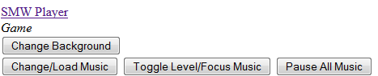
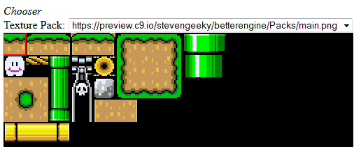
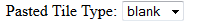
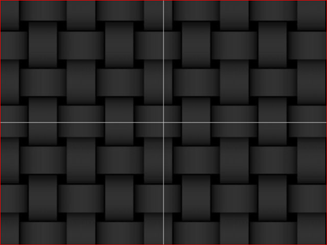
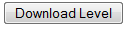

SMW (Super Mario Web) Instructions for Building a Game
Super Mario Web is a utility created in order to play mario within your browser, without the need of the web at all.
Requirements:
Latest version of Firefox (Would mention Chrome/Opera, but
neither will allow Ajax Requests on a local device)
Programming knowledge for extensions (such as sprites or
engine abilities), and for actually implementing the level into your game
And that's it! Your computer will not need to be a huge wielder of graphics power, though larger levels within your game may put a strain on your CPU (Not entirely sure that the built-in 2D canvas uses the graphics card at all).
To start off, open up edit.html, the central location for creating a new level within your game. You will be presented with two main windows, along with a link and a few buttons to the top left of the document.

Here is a walkthrough of what each button does and how
exactly to use each:
Change Background - Changes the background of the game to a
given one (no extension required; assumed .png file). Note that the
filename you type will be assumed to be in the folder Backgrounds.
Change/Load Music - Adds music to the game (music presumably
is assumed to be within the Music folder). No extension required.
A very important note is that only a few file types work, including .mp3.
Toggle Level/Focus Music - You'll have noticed when you
opened up the file that music is already playing. This is not
inserted into the game. It is for pure focus only. Who
wants to work in dull silence? Anyways, this button toggles between the
focus music and the music you have inserted into the level.
Pause All Music - In case you do not want to listen to any
music, just click this button, and it will get rid of it for you. Adding a
music track to your game will automatically cause it to play, though you can use
this button again to quit listening to it.
On to the actual editing of the game itself, if you look below the button options at the top left, you will see the tile select window, and the tile select option drop down.

The select element allows you to switch between which texture packs implemented into the game (only one is inserted as of now, an early entrance into the game engine project). Here, you can select a tile to use to paste into your game. Rightclicking on multiple tiles will append them into one animation as part of the texture of the tile you are intending to paste. Something else important that you should note and modify accordingly is the select by the aforementioned buttons:

This is the type selector. Whatever tile you paste
down next (unless it is something like a direct copy, which we'll get to later
on), will have this tile type. This is very important for the
implementation of a player and for other sprites. It instructs
sprites of what routine to follow based on what type of tile it has hit.
As of now the three tile types implemented are blank, ledge, and solid; all of
which are pretty self explanatory.
In order to drag around the camera for the tile window (for larger sprite packs
that extend beyond the size of the tile selector window), hold down space,
click, and drag to pan the camera around.
On to the good stuff: the game editor window. There's a lot of stuff to go over here already even though this editor is only two days in the making so far.

So you may be asking yourself, "What the hell is this?"
Well, this is the game window. It doesn't look like much, but that's
because we haven't added anything yet. The woven thread background is just
there as a "null indicator". The lightblue lines separate the the
quadrants that make up a cartesian-like system that is the coordinates in which
every sprite (including blocks) use to map into the game. Where they
intersect is (0, 0), and going counterclockwise from the top right quadrant is
(positive, negative), (negative, negative), (negative, positive), (positive,
positive).
What is the slim red border that is a bit hinted you ask? Well, that
border represents the boundedness on the camera when the level is to be played
as part of an actual game.
Similarly to the selector window, you can hold down space and click and drag to move the camera around (showing off the parallax effect that is part of the new engine). You can also hold down 's' and click and drag vertically in order to change the scale (This is part of the editor only. There is no scaling within the actual game). The parallax interval will change according to scale, so you may notice a sort of diagonal scrolling effect of the background when zooming.
In order to change the bounded area on the camera, click and drag the left, right, top, or bottom of the red border to new areas. The editor will not let you have a bounded area with a lesser vertical and/or horizontal distance than that of the screen display.
To paste in a tile from the tile selector window into the
game, right click in order to paste in a single tile, or hold down the mouse and
drag the mouse over the rectangular area that you would like to paste tiles
within to put in multiple of the same one at once.
Already instantiated tiles can be selected with a left click, and dragged
around, or repasted with another right click.
You can select more than one block at a time by holding down control and
clicking multiple at once, or by clicking and dragging over the rectangular area
that includes the tiles you would like to select. Once selected, tiles
and/or sprites can be left clicked again and dragged around to new locations.
After you've made your game (can't be too awesome at this early point on, but hey, it's still gotta be great!), it's time to export it to be played! Click on the 'download level' button in order to export the content of your level into a specific format similar to that of .obj. You can drag this file into the editor window to open it for modification in case you happen to close out of the page and reopen it.

Now comes the bit that requires a tad amount of
programming knowledge (though implementation of other things will require more
than just that). In the file main.js, you will need to load that
file into the game via the openLevel method.
Though later on in this tutorial (once more stuff is implemented) I will be
going on the basis that you know a thing or two about JavaScript, for now, I'll
assume you're an absolute noob who has never seen anything like it before.
In between the two curly braces where it says loaded(){ ... }, we will
load our level. Here, put
openLevel("[nameOfFile]", function(){
player = Sprite.mario({ x:-31, y:-64, type:"player" });
game.sprites.add("player", player);
});
And where it says "[nameOfFile]" you would put "myFile.txt" or whatever you
named it, and this has no assumed directory; it only uses the relative directory
of where ever you have put the main html file at (called index.html).
You could also change the x and y spawn locations of the player here as well, I
just used those for example purposes.
Now open index.html, and viola! You can play the result of your constructed game!